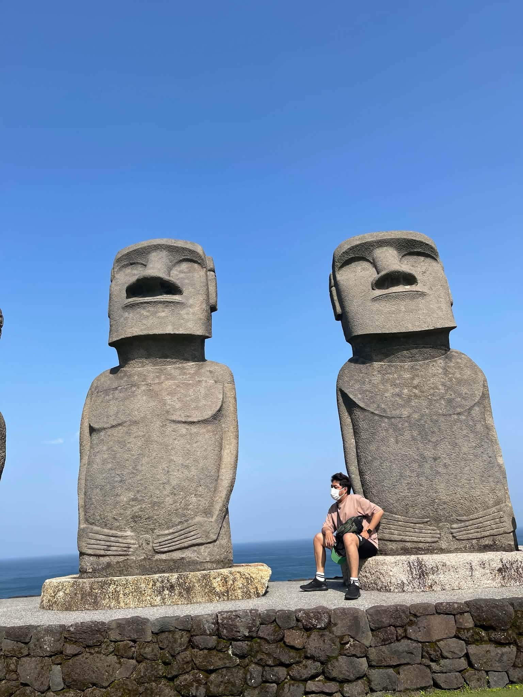
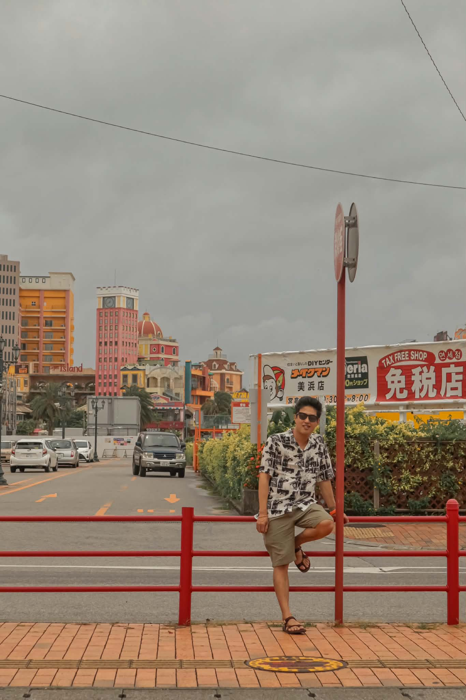

タウンジー大学(地質学専攻) 入学
タウンジー大学(地質学専攻) 卒業
東方国際学院 日本語学校 入学
タ東方国際学院 日本語学校 卒業
学校法人三幸学園 東京みらいAI&IT専門学校
AIプログラミング&CGクリエイター科 入学
学校法人三幸学園 東京みらいAI&IT専門学校
AIプログラミング&CGクリエイター科 卒業
デインタイフォン東京駅八重洲口店 アルバイト 入職
デインタイフォン東京駅八重洲口店 アルバイト 退職
てけてけ御茶ノ水駅前店 アルバイト 入職
てけてけ御茶ノ水駅前店 アルバイト 退職
株式会社スリーアイ 入社（正社員）
【職務内容：社内研修および技術習得期間】
入社後、社内研修にてシステムの基礎知識を学ぶとともに、自主的な技術習得に注力。5ヶ月間で以下の専門資格を独学で一発取得いたしました。
現在は、実務へのアサインに備え、自社のWebシステムをベースにした「基本設計書」の作成手法を自主的に学習しております。
現在に至る（在職中）
日本語能力試験 N2 合格
Salesforce 認定アドミニストレーター 取得
Salesforce 認定 Agentforce サービスコンサルタント 取得
TOEICの語彙を効率的に学習できるWebアプリケーションを開発しました。日本語とミャンマー語の両方で意味を確認でき、約1,200語の単語を収録しています。
ユーザーは検索機能で単語を素早く見つけたり、お気に入り機能で重要な単語をマークして後で復習することができます。
1年次には、Scratchを用いたチーム開発でリーダーを務めました。メンバー一人ひとりの強みを把握し、適材適所のタスク分担と徹 底したスケジュール管理を行いました。
その結果、計画通りに開発を完了させることができ、チームで一つの成果物を創り上げる達成 感を味わいました。
この経験から、計画性とチームをまとめることの重要性を学びました。
2年次には、その経験を活かし、さらに難易度の高いJava（Spring Boot）を用いた5人チームのWebアプリケーション開発プロジェクトに挑戦しました。データベース設計からバックエンド実装まで一貫 して担当し、リーダーとしてプロジェクトを牽引しました。当初は、メンバー間の技術力の差や進捗管理の難しさに直面しましたが、1 年次の経験をベースに、密なコミュニケーションを重ねてタスクを細分化し、進捗可視化シートを導入することで、チーム全体の状況 を共有しながら開発を進めました。結果として、予定通り高品質なWebアプリケーションを完成させることができました。
私の最大の強みは、「新しい技術を迅速に習得し、短期間で成果に結びつける自己学習力」です。 現在の職場では、入社後の4ヶ月間で自主的な学習ロードマップを作成し、独学を重ねた結果、Salesforce認定アドミニストレー ターおよびSalesforce認定Agentforceサービスコンサルタントの2つの専門資格を一発合格で取得することができました。この経 験を通じて、Salesforceの標準機能から最新のAI連携技術に至るまで、幅広い知見を体系的に身につけることができました。 また、IT専門学校ではJava（Spring Boot）を用いたWebアプリケーション開発に注力し、データベース設計からバックエンド実装まで一貫して経験しました。特に2年次 には5人チームのリーダーを務め、タスク分担・進捗管理・密なコミュニケーションを通じて、予定通り高品質なWebアプリケーションを 完成させた実績があります。この経験から、技術力だけでなく、チームをまとめる調整力やプロジェクトを推進する責任感を培いました 。 貴社のシステム開発プロジェクトにおいても、この「迅速な学習力」と「Java × Salesforce」のスキルを活かし、一日でも早く戦力として貢献できると自負しております。入社後は、実務経験を積みながらさらにス キルを磨き、将来的には上流工程から携われるエンジニアを目指してまいります。